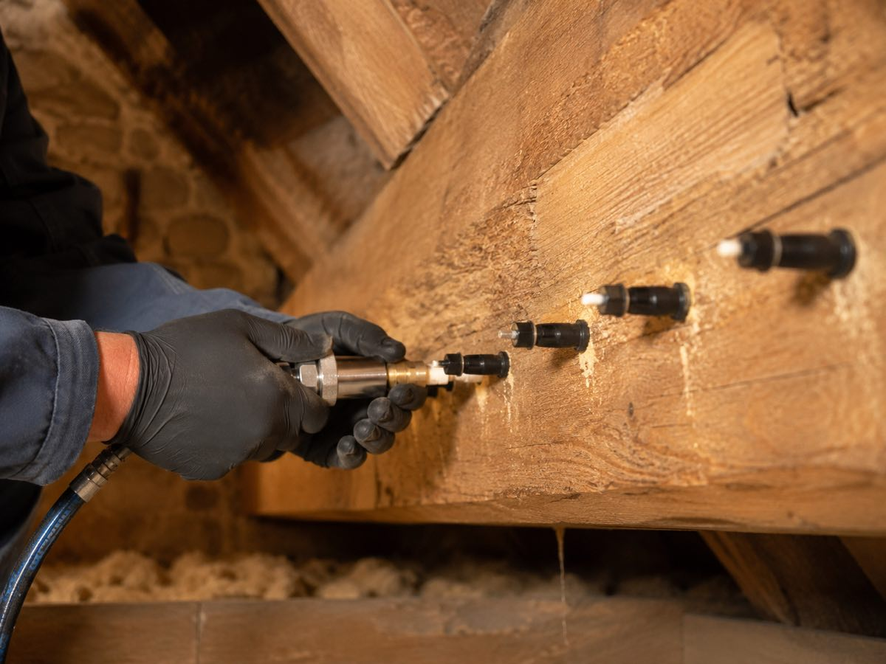

Vous avez remarqué un de ces signes chez vous ?
- Un bois qui sonne creux ou qui se feuillette en surface
- Des cordonnets de terre le long des murs ou des fondations
- Des essaims d'insectes ailés au printemps
- Des boiseries qui se déforment ou cèdent sous la pression
Un seul de ces signes suffit pour nous contacter : décrivez ce que vous voyez, le devis est gratuit et sans engagement.

Traitement termites : détecter et protéger votre maison
Comment savoir si on a des termites dans sa maison ?
Les termites sont les plus discrets des xylophages : ils creusent le bois de l'intérieur sans laisser de sciure. Les indices à connaître :
- Bois qui sonne creux ou qui se feuillette : la surface reste intacte, l'intérieur est mangé
- Cordonnets de terre (galeries-tunnels) le long des murs, plinthes ou fondations
- Essaimage d'insectes ailés au printemps, souvent près des fenêtres
- Menuiseries qui se déforment ou cèdent sous une pression légère
Seul un examen professionnel confirme une infestation de termites : c'est exactement ce que fait notre devis gratuit.
Les termites, est-ce dangereux ? Le cas particulier de la Gironde
La Gironde est l'un des départements les plus touchés de France : de nombreuses communes, dont Bordeaux et le Bassin d'Arcachon, sont classées par arrêté préfectoral, et l'état relatif à la présence de termites y est obligatoire pour vendre un bien. Une colonie peut compter plusieurs millions d'individus et fragiliser charpente, planchers et menuiseries jusqu'à menacer la solidité du bâtiment. Les dégâts progressent en silence : quand ils deviennent visibles, l'infestation est déjà ancienne.
Termites dans la maison ou doute avant une vente ? Notre technicien confirme ou écarte la présence de termites, et vous guide sur les obligations en zone classée.
Notre traitement anti-termites, étape par étape
- 1. Visite technique : inspection des bois, maçonneries et abords, recherche de galeries-tunnels
- 2. Choix de la méthode : traitement chimique par injection dans les bois et maçonneries, barrière de protection autour du bâtiment, ou pièges selon la situation
- 3. Mise en oeuvre certifiée par notre technicien, sans sous-traitance
- 4. Garantie et suivi : contrôle dans le temps pour prévenir toute réinfestation

Combien coûte un traitement anti-termites ?
Un traitement termites complet (injection, barrière ou pièges) démarre à partir de 1 500 € selon la surface du bâtiment, la méthode retenue et l'étendue de l'infestation. C'est sans commune mesure avec le coût d'une charpente ou de planchers à remplacer. Le devis est gratuit, détaillé, transparent et sans engagement.
Une entreprise de traitement des termites en Gironde
LSR Habitat est une entreprise de traitement termites implantée en Gironde, au coeur d'une des zones les plus exposées de France. Entreprise familiale, sans sous-traitance, produits certifiés, garantie de résultat, 5,0/5 sur 19 avis Google. Intervention dans toute l'Aquitaine, depuis notre base de Gironde.
Société de traitement des termites, spécialiste de la destruction des colonies en Gironde, nous combinons injection des bois, barrière chimique ou pièges selon la configuration. Le prix est posé avant intervention : notre expert détaille chaque tarif ligne par ligne dans le devis. Artisan certifié Certibiocide, le professionnel qui diagnostique est celui qui traite.